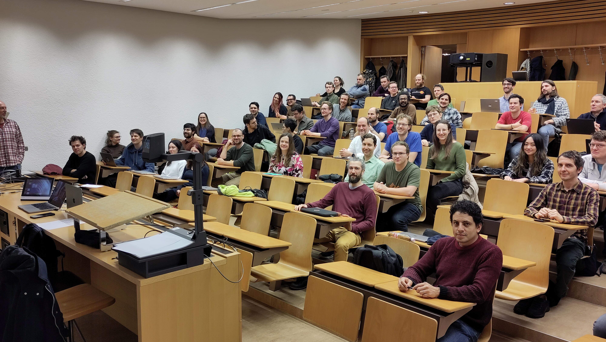

RSE@ETH - The Force awakens
The Research Software Engineering (RSE) community group at ETH was founded in late 2023 due to the regional need for an RSE community that arose on a university level. Although RSE@ETH had its first online information event on the December 12, 2023 the get-together on the February 1 served as an opportunity to get to know the RSE community at ETH better, and to understand their wishes and needs for a community such as RSE@ETH.

Event Program
The event was structured as follows:
First, participants were able to present one of their RSE-related projects in a lightning format of less than 5 minutes per speaker. Then the keynote speaker, Peter Schmidt, a trustee of the RSE Society UK, gave a talk on RSE developments in the UK, and finally, in the breakout sessions, participants split into groups to discuss three questions related to the development of the RSE@ETH community.
Lightning Talks
With eight different projects and seven different research areas represented in the lightning talks, you might not think that there would be much in common between the speakers. After all, the speakers were presenting their software solutions for their highly specialised fields, ranging from the need to better control experiments in high-voltage physics through software to anonymising academic peer review.
However, it was surprising to see how well the audience related to the problems presented. The audience noted the similarities in the nature of the problems faced by RSEs, such as data processing and re-entry after errors. Participants recognised the need for a local community that promotes collaboration when faced with similar local issues. This way, researchers do not have to reinvent the wheel every time they want to use software to advance their research.
Keynote - Peter Schmidt
The lightning talks were followed by a speech from Peter Schmidt, who has an academic background in physics and software engineering experience. In addition, he is active in the UK RSE community and hosts a podcast called “Code for Thought”, which touches upon many different RSE topics, such as reproducibility, net zero in computing, and, my favorite: Open Data, without friction. In his talk, Peter shared the journey of the UK RSE chapter, which started in 2013 with a group smaller than ours. He shared some key resources for RSEs, such as the Software Sustainability Institute’s fellowship program and a campaign called the hidden REF which aims to “celebrate all research outputs”, beyond publications and researchers.
Community Building
Finally, the audience was divided into groups to discuss three questions shown below. This part of the program generated a lot of interesting discussion, which led to the following ideas worth sharing:
- Q1: What are the expectations of the community, and how do we get there (short and long-term)?
- Long-term: seek SNF funding for joint RSE projects from different labs
- Launch a mentoring program
- Q2: How do we increase visibility, engagement, and diversity?
- Create ambassador roles within institutes
- Seek industry representation
- Q3: Should we form special interest groups?
- Yes, once we reach a certain size: group by interest/technology rather than by discipline
- the overall aim is not to fragment the community
Given the lively discussions and the motivation felt in the audience, the RSE community hope to be able to implement these ideas as the RSE@ETH community grows.
At RSEED, we are excited about the incredible turnout of the event and the diversity and motivation we saw from the RSE@ETH community. We thank the team from ETH’s Scientific IT Services, namely Uwe Schmitt, Franziska Oschmann, and Tarun Chadha, who organised the event. As an emerging competence center for economic data and research software engineering, we want to use our resources to help build the RSE@ETH community in the future.
If you are also interested in joining the RSE@ETH community, you can join the Element chat using the link below.
Links
RSECON 2024 | RSE Element | Code for Thought episode recommendation